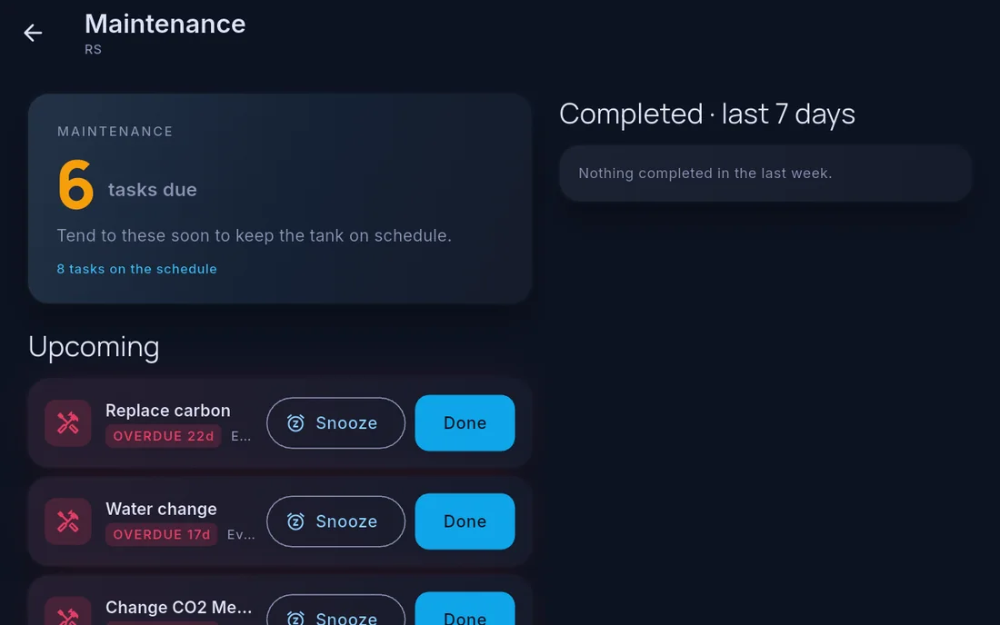

Journal, livestock and maintenance
Cora Max shows the same records as the phone, but it is not a full editor for all of them. What you can do at the wall differs by area:
| Area | On Cora Max |
|---|---|
| Journal | Read and add entries |
| Readings | Log test results with the on-screen keyboard |
| Maintenance | Complete or snooze a task. Creating and editing tasks is done on the phone |
| Livestock | Read-only. Add and edit on the phone |
Anything you do add here appears on your phone immediately, and the other way round.
Reach all of them from the tank menu — tap the tank name in the top bar.

Journal
Add an entry without leaving the tank. This is usually the more convenient of the two — the wall screen is where you are standing when you do the work.
The journal icon in the top bar shows a marker when there is something new. See The journal.
Livestock
The full inventory, grouped by type, with the same statuses as the phone — read-only here. Adding and editing livestock is done in Cora Mobile; the entry you make there appears on this screen straight away. See Livestock.
Maintenance
The task list with its compliance figure and overdue count, and the ability to mark a task done as you finish it. See Maintenance.
Logging readings
Cora Max has an on-screen keyboard for entering test results directly, so a test done at the tank can be recorded at the tank.
Written for Cora Max 0.28.33 and Cora Mobile 0.5.54.
Still stuck? Email cora@coraiq.tech and we'll help.